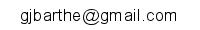

As of December 2018, I am a scientific director at Max Planck Institute for Security and Privacy, Bochum, Germany and a part-time research professor at IMDEA Software Institute, Madrid, Spain. My research interests include programming languages and program verification, software and system security, cryptography, privacy, and mathematical logic. My most recent research develops programming language techniques and verification methods for security, with a focus on relational verification and its applications to cryptography and differential privacy.
Prior joining Max Planck, I was affiliated with IMDEA Software Institute, Spain (2008-2018); INRIA Sophia-Antipolis Méditerranée, France (1999-2008); University of Minho, Portugal (1998-1999); Chalmers University, Sweden (1997-1998); CWI, Netherlands (1995-1997); University of Nijmegen, Netherlands (1993-1995); University of Manchester, UK (1990-1993). I received a Ph.D. in Mathematics from the University of Manchester, UK, in 1993, and an Habilitation à diriger les recherches in Computer Science from the University of Nice, France, in 2004.
I have multiple openings for Ph.D. and post-docs; I also welcome applications for internships. Candidates should be willing to carry research in the broad areas of security, privacy, programming languages, and program verification. Starting date is as early as convenient. Please contact me if interested.
The institute also has multiple tenure-track and tenured positions (pending final approval). Positions will be advertised in the coming months. Please contact me for further information.
Email: 
Phone: +49 15 11 430 45 74
(Temporary) address:
Lehrstuhl Embedded Security
Gebaeude ID 2/607
Ruhr-Universitaet Bochum
Universitaetsstrasse 150
44801 Bochum
Germany